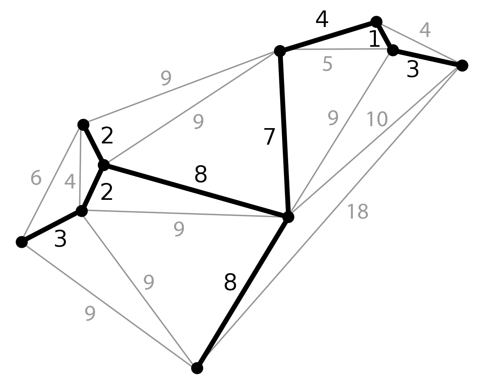
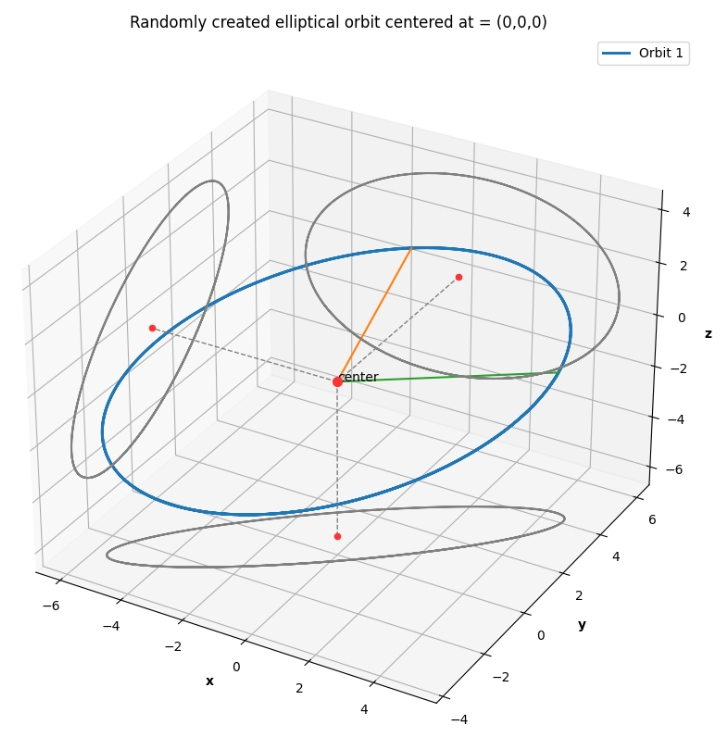
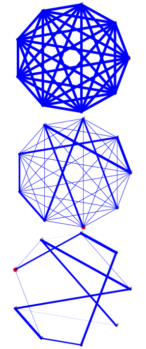

Introduction and Motivation
In the Fall of 2022, a small team and I became interested in spacecraft path planning and set up a toy version of the problem. It soon materialized into a hypothetical orbital system with some \(n\) number of space debris pieces in elliptic orbits that we would have a spacecraft “intercept” to collect1. Such a space trash collector2 might not be able to collect too many junk pieces in real life just yet, and ours was a highly fantastical set up, but the problem was too irresistible to turn down because it was the (time-varying) travelling salesman problem!
The travelling salesman is a notoriously famous combinatorial optimization problem where the objective is for a salesman to find the shortest Hamiltonian cycle through
Hamiltonian Cycle
Named after 19\(^{th}\) century mathematical Sir William Rowan Hamilton, most famously known for his invention of the concept of quaternions3, a Hamiltonian cycle is a “tour” of a graph beginning and ending at the same vertex.
some \(n\) cities. The complexity of the question becomes more apparent upon closer inspection to those to whom it might be new:
- Starting from the first city, there are n-1 cities to pick from, from the second only n-2 and so on…
- Simply picking the closest city every time will not always (almost never in fact!) lead to a summed shortest travelled distance.
- The constraint that says the salesman has to travel back to the first city to complete a required round-trip makes the minimum spanning tree based
Minimum spanning tree
The MST is the shortest possible “tree” creating routes in a weighted graph such that the path from any one node to another will always be the shortest possible path!  The minimum spanning tree of a weighted, undirected graph, courtesy: Wikipedia. approach intractable.
Now imagine a similar problem with space debris collection, where the pieces of debris are all continuously moving. This is the time-varying travelling salesman.
Elliptical orbits - problem set up
The first step was to create the environment by simulating elliptical orbits for the \(n\) pieces of debris our spacecraft trash collector has to collect. This was done by using the parametric equation of the 2-ellipse in 3-dimensional space:
\[x(t) = u_x \hspace{0.2cm} cos(t) + v_x \hspace{0.2cm} sin(t) + c_x\] \[y(t) = u_y \hspace{0.2cm} cos(t) + v_y \hspace{0.2cm} sin(t) + c_y\] \[z(t) = u_z \hspace{0.2cm} cos(t) + v_z \hspace{0.2cm} sin(t) + c_z\]
The way I understood the intuition behind this parametrization was by considering the projections of an ellipse so generated onto the three orthogonal planes like shown in Fig 1. The ellipse
An ellipse in 3D space and its projections

Fig 1. A 2-ellipse in 3D space and its projections onto the XY, YZ and XZ planes.
in the sidenote was generated using the values \(u_x = 1\), \(u_y = 2\), \(u_z = 4\), \(v_x = 5\), \(v_y = 3\) and \(v_z = 0\) with the constants \(c_x, c_y, c_z\) all 0. This can be interpreted in two ways:
The projections are each a 2-ellipse which have parametric equations with the coefficient constants picked in pairs from the 3 available sets, to produce ellipses of the form: \[x(t) = cos(t) + 5 sin(t)\] \[y(t) = 2cos(t) + 3sin(t)\] For readers familiar with the standard ellipse equation: \[ \frac{x^2}{a^2} + \frac{y^2}{b^2} = 1\] a simple substitution into the standard ellipse equation of the following form: \[ x = a cos(\theta); \hspace{1cm} y = b sin(\theta) \] reveals the trigonometric identity: \[ \frac{a^2 cos^2(\theta)}{a^2} + \frac{b^2 sin^2(\theta)}{b^2} = cos^2(\theta) + sin^2(\theta) = 1 \] \[ \]
The ellipse created in 3D space is that unique 2-ellipse which passes through the two 3D vectors \(u = (1, 2, 4)\) and \(v=(5, 3, 0)\).
Ant Colony optimization
The authors of Ant Colony Optimization Algorithms for Dynamic Optimization: A Case Study of the Dynamic Travelling Salesperson Problem4 describe in detail the two kinds of “swarm intelleigence metaheuristic based” approaches to solving the travelling salesman problem - the evaporation based approach and the population based approach. A few points of importance applicable to both techniques are listed below:
- Ant colony optimization
Pheromone trails as memory
The behavior of ants makes for pheromone trails as an excellent representation of dynamic memory. Their intensities are a popularity vote amongst members of the colony that is always changing with time. (henceforth refered to as ACO) is inspired by the behavior of eusocial insects which live in colonies like ants who deposit a continuous trail of pheromones along a suitable path between their homes and a food source, telling others in the colony how to reach that food source. - A more viable food source
Does closest = = best ?
The foragaing behavior of ants in the wild is pretty random until a good food source is located. This means that those ants that find food sources the quickest will be able to return to the colony the fastest to “tell” their mates and attract more footfall along that route. This is however not indicative of long term states of the pheromone trails, and emergent behaviour at a future time could favor completely different paths. will attract a greater number of ants and will in turn strengthen the pheromone trail along the path to it, attracting even greater footfall. - Pheromone trails do not last forever and so, disuse caused by dwindling food supplies at the destination will reflect in the loss of strength in the pheromone deposits along that path.
- And finally, the dynamic (time-varying) nature of the problem means that as the state of the system changes (the food supply locations for the foraging ants), there is suddenly a new world state and having to start from sractch to find the optimal solution would be a waste. Instead, there has to be a way to computationally carry over the effects of learned paths from the previous world state into future and at the same time continue to fine tune in order to find an optimal solution.
With that said,
Evolution of Pheromone trails over time

Fig. 2. Pheromone trails at initial time, and after 4 and 8 iterations of the ACO algorithm
the general idea behind ACO and how we used it to find an optimal path between N pieces of debris is listed as below:
- The G(N, A) graph with the N pieces of debris as its nodes, and the arcs A connecting each to every other, initialized with the distances between them is the world state,
- the world state is constantly changing, but the known orbital parameterizations make for easy predictions of exactly where every space junk piece will be at any future time,
- some \(\omega\) number of ants are randomly distributed amongst the \(N\) nodes at the beginning and will travel to every other node and back in each iteration of the algorithm.
- the total path length is simply the sum of distances travelled along an approximated elliptic path connecting any two debris at the instance of calculation, a necessary simplification we had to use in order to speed up running time,
- the best pheromone trail is strengthened at the end of every iteration while the others lose some strength,
- but, all trails also lose some of their potency (even the current iteration best which gets a reinforcement as mentioned in 5.), in order to have a diminishing returns effect as time progresses and the debris pieces move into vastly different arranegements than they used to be when the previous optimal path was computed,
- finally, multiple runs must be conducted in order to settle upon a quasi-optimal solution for this algorithm.
Evaporation based ant colony optimization
Given below is the algorithm for the evaporation based scheme of ACO algorithms, with the world state being that the positions of the pieces of space debris (nodes) and the paths between them (arcs) together are represented in the form of a graph G(N, A):
Symbols and nomenclature
1. \(\tau_{ij}\) : the pheromone trail strength between nodes \(N_i\) and \(N_j\)
2. \(\omega_i\) : the i-th ant
3. \(\pi_i\) : the hamiltonian cycle of the i-th ant
4. \(\pi^{ib}\) : “iteration best”-ib path among all \(\omega\) ants
5. \(\pi^{bs}\) : “best solution”-bs path among all ants and all iterations
6. \(\phi(\pi_i)\) : the total length of the i-th ant’s Hamiltonian cycle
- Initialize all arcs (A) or paths with the same trail value \(\tau_0\)
- while termination condition is not satisfied, do:
- for \(\omega\) ants construct N length solutions by choosing successive nodes according to some probablistic rules
- “evaluate” all the solutions: calculate the total distance of each path \(\phi(.)\)
- store the “iteration best” (ib) solution: \(\pi^{ib}\)
- update simulation time
- if \(\phi(\pi^{ib})\) < \(\phi(\pi^{bs})\) (\(\pi_{bs}\) being the best solution so far across all iterations): then \(\pi^{bs} \leftarrow \pi^{ib}\)
- update all pheromone trails \(\tau_{ij}\)
- repeat until 1-8 until the best solution is found
Implementation
This section describes the way I programmed the algorithm and its nuances along with snippets of code with descriptions of the various functions.
Creating the orbits
The first section was creating the orbits and testing them out, and so the the parametric equations were hard coded to take in the \(u\) and \(v\) vectors along with the centers \(c = (0,0,0)\) for each of the \(N\) orbits. The output of the set-up we used for the final results is shown below in Fig 3.
How every ant picks its next node
Each of the \(\omega\) number of ants is initialized to one of the 9 random nodes at the start of the algorithm. And at every step, a set of probablistic rules helps each ant pick its next node.
We can begin to comprehend this scheme with the first parameter of interest \(q_0\). When \(q_0\) is 0 the scheme of choice is called the random proportional decision rule and the given some pre-defined parameters \(\alpha\) and \(\beta\) we define the following new quantity:
Random proportional decision rule:
\(p_{ij}^k\) : the \(k^{th}\) ant’s probability of going to node \(N_j\) from current \(N_i\)
\(\tau_{ij}\) : the pheromone trail strength between \(N_i\) and \(N_j\)
\(\eta_{ij}\) : 1/(distance between \(N_i\) and \(N_j\))
\[ p_{ij}^k =\frac{ [\tau_{ij}]^{\alpha} \hspace{0.2cm} [\eta_{ij}]^{\beta} }{ \sum_l [\tau_{il}]^{\alpha} \hspace{0.2cm} [\eta_{il}]^{\beta} } \]
where \(\eta\) is the inverse of the graph weights connecting the corresponding nodes in the subscripts indices (in our case, the actual distance along an approximated elliptical orbit between two space junk pieces). An ant will thus pick its next node \(j\) using the calculated \(p_{ij}\) from among the remaining number of debris pieces,
Remaining nodes
The travelling salesman (in our case the space trash collector) can visit every node only once! This means that the algorithm will have one lesser node to consider for every ant at every iteration.
simply as the one with highest probability:
\[ j = \text{argmax} \Big\{ p_{ij}^k \Big\} \]
However, when \(1 > q_0 > 0\) (it is also a probability) we have a choice and will be opting for what is called the pseudorandom proportional decision rule. The choice lies in that, with a probability of \(1 - q_0\), an ant will choose according to the random proportional rule defined above, and with a probability of \(q_0\), will choose according to metric:
alpha and beta
\(\alpha\) and \(\beta\) are two pre-defined parameters that are used to prioritize the \(\tau\) values over the \(\eta\) values or vice-versa. Their significance becomes clear when considering which might be bigger in value: when \(\alpha\) is greater, the \(\tau\) values - the pheromone trails indicative of solutions from past iterations are prioritized; and when \(\beta\) is greater, the \(\eta\) values or the current weights of the Graph edegs are prioritized.
\[ j = \text{argmax}_{l \in N_i} \Big\{ [\tau_{il}]^{\alpha} [\eta_{il}]^{\beta} \Big\} \]
Updating the pheromone trails
The pheromone trails are updated at every step of the algorithm after all the \(\omega\) ants have a path through the \(N\) nodes and the iteration best path among all has been computed: \(\pi^{ib}\).
def pheromone_trails_update(self):
"""
Updating all the pheromone trails after every iteration
No inputs, no return values
"""
# First decrease all trails by the evaporation rate amount
self.ph = self.ph * (1-self.rho)
# Choose between the iteration best and the best so far solution paths
if np.random.uniform(1,1) < self.q_ph:
chosen_path = self.path_bs
else:
chosen_path = self.path_ib
# next increase only those along the best so far path by a stipulated amount
for node in range(len(chosen_path)-1):
self.ph[int(chosen_path[node])][int(chosen_path[node+1])] += (1/self.W[int(chosen_path[node])][int(chosen_path[node+1])])
self.ph[int(chosen_path[node+1])][int(chosen_path[node])] += (1/self.W[int(chosen_path[node+1])][int(chosen_path[node])])
self.ph = np.clip(self.ph, self.ph_min, self.ph_max) # clipped to stay within limitsThis was done (and is shown in the snippet of code above) as follows:
first, decrease all the pheromone trails by a factor of \(1 - \rho\) where \(\rho\) is the evaporation rate of the algorithm, Evaporation rate
A metric which influences how quickly pheromone deposits evaporate, or lose intensity, the most important factor in deciding how much of a role previous solutions play in context of a changed world state; the “memory” component of the DTSP algorithm.then do a bieased coin toss based on a pre-determined probability value \(1 > q_{pheromone} > 0\) (in code as
self.q_ph) that selects a chosen path between the current iteration best \(\pi_{ib}\) and the overall best solution path \(\pi_{bs}\) (from all iterations so far), Chosen path
The chosen path is determined by a biased coin flip as either \(\pi^{ib}\) or \(\pi^{bs}\) to account for the dynamic nature of the world state. For a large number of ants, there will always be a \(q_{ph}\) number of them who chose to go with the current iteration best over the overall best solution, discarding optimality/memory of an older, better path for a new one! The greater this \(q_{ph}\), the more credence we give to new solutions over older ones; resulting in longer convergence time.finally, every edge \(G(A_{ij})\) in the chosen best path is updated with pheromone deposits between nodes \(N_i\) and \(N_j\) inversely proportional to the edge weights at that time instance!
The role of graph edge weights
The pheromone trail update rules are not only discriminatory w.r.t fresh deposits (reinforcement), but also only do so in quantities inversely proportional to the corresponding graph edge weights! This makes sense since even though those edges connected nodes along the chosen path are being sterngthened (chosen against all odds!), the dynamic nature of the system means that current optima need not be optimum anymore even a few time instances later. Therefore, debris pieces closer to out current position will get reinforced more strongly compared to those further away.
Results
The following are the parameters used for a simulation and the output of a run that converged in 50 iterations:
n_ants = 100 # total number of ants (omega)
iters = 50 # Maximum number of iterations
rho = 0.9 # evaporation rate
tau0 = 10 # pheromone trails initialization value
alpha = 1 # for now == 1
beta = 5 # for now == 1 have to be unequal for the relative inluences to change the way paths are chosen
q_ph = 0.20 # threshold to pick between the best so far and the iteration best paths for pheromone trail update
ph_min = 10e-8 # lower limit on the pheromone trail values
ph_max = 17 # upper limit on the pheromone trail values
q0 = 0.35 # 0.35:0.65 prob of randomly picking the next node and picking the most likely one to visit
Final pheromone trails
The algorithm had completely eliminated all other connecting graph edges other than the ones through the exact order of nodes that was computed as optimum; their intensities so small that they did not even turn up on the plot.
Discussion
This section contains a few remarks based on my observations from multiple runs about the influence of the various metrics and factors that constitute the ACO algorithm.
Effect of the number of ants
While it is true that a greater number of ants results in a more accurate distribution of choices based on biased coin flips wherever necessary throughout algorithm, having way too many ants only slows the process.
In contrast as one would expect, too few ants do not always find the optimal solution that 75 or more ants tend to find. And, the greater the number of nodes to traverse through, the more the requisite number of ants becomes.
Evaporation rate
Most of my runs were done with the recommended \(\rho=0.8\) evaporation rate. However, since the value of \(\rho\) is not the only factor influencing how the pheromone trails change over time, changing them to a value much smaller resulted in the algorithm terminating prematurely with no more trail updating happening by virtue of nearly 0 valued trail strengths early into the simulation.
And just as logic dictates, the closer to 1 the value took, the longer it took until convergence, generating wildly different solutions for every other run or stagnating and getting clipped to the highest possible value, regressing to a stte similar to the initial state where all trails were of equal strength.
Pheromone trail minimum and maximum values
[to be updated]
Algorithm time and world time
[to be updated]
Future scope
The many approximations and simplifications we had to make given the project timeline (and the nature of the problem we were trying to solve) made for a toy model variant of an already watered down version of the problem. Some improvements I hope to introduce to the existing code are listed below:
- Vary the orbital velocities of the pieces of debris based on the nature of their orbit to make the set-up seem more realistic
- Create elliptic orbits that are closer to the true scale of space debris and centered at one of their foci instead of at the point of intersection of their major and minor axes as they have been used now.
- Develop a greater understanding of the interplay between the simulation time and the time rate at which the dynamics make the debris pieces move, accordingly incorporating necessary refinements into the code base for the same.